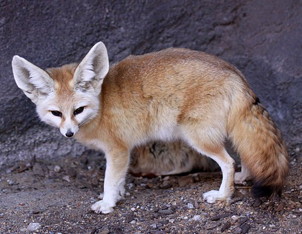

Фенек (Vulpes zerda) — пустынная лисица

Фенек — это миниатюрная лисица, обитающая в пустынях Северной Африки. Он является самым маленьким представителем семейства псовых.
Основные сведения
- Научное название: Vulpes zerda
- Семейство: Псовые (Canidae)
- Ареал обитания: Песчаные пустыни и полупустыни Северной Африки.
- Национальное животное Алжира.
Внешний вид и размеры
Ключевые параметры фенека:
- Вес: До 1,5 кг.
- Высота в холке: 18–22 см.
- Длина тела: 30–40 см.
- Длина ушей: До 15 см (наибольшие среди хищников относительно головы).
- Шерсть: Густая, мягкая, палевого или рыжеватого окраса сверху, белая снизу. Хвост пушистый, с черным кончиком.
- Особенность лап: Стопы опушены для защиты от горячего песка.
Огромные уши фенека помогают не только улавливать малейшие шорохи добычи, но и служат для терморегуляции, способствуя охлаждению тела.
Образ жизни и питание
Питание
Фенек всеяден и питается:
- Мелкими позвоночными (грызунами, ящерицами).
- Насекомыми (саранчой).
- Яйцами, падалью.
- Растительной пищей (корнями, ягодами, плодами).
Он может долго обходиться без воды, получая необходимую жидкость из пищи, и часто делает запасы еды.
Поведение и среда
- Фенеки — социальные животные, живут семейными группами.
- Они роют сложные норы в песке, где укрываются от дневной жары.
- Эти лисицы очень "разговорчивы" и издают множество звуков: лай, вой, скуление и ворчание.
- Фенек отличается быстротой и умеет прыгать почти на метр в длину и высоту.
Разработчик:
Б9123-09.03.04 (4 подгруппа)
Манжелей Никита Александрович